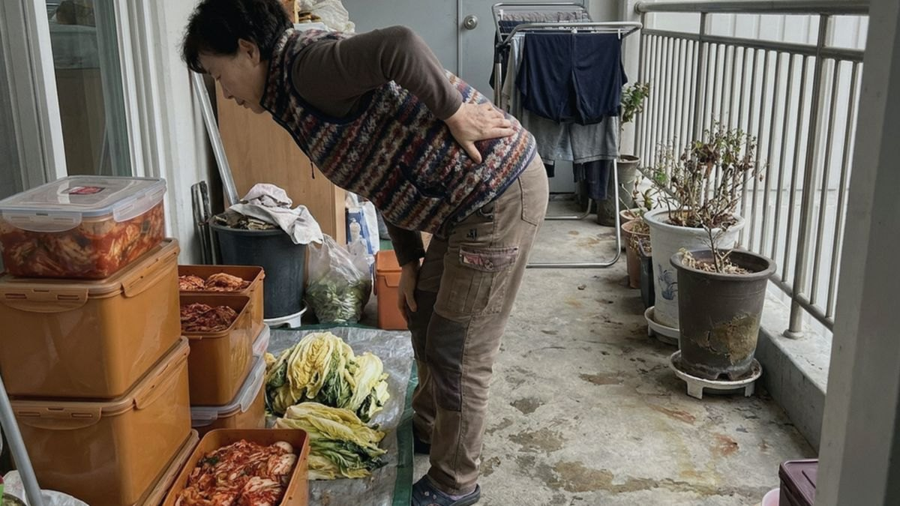
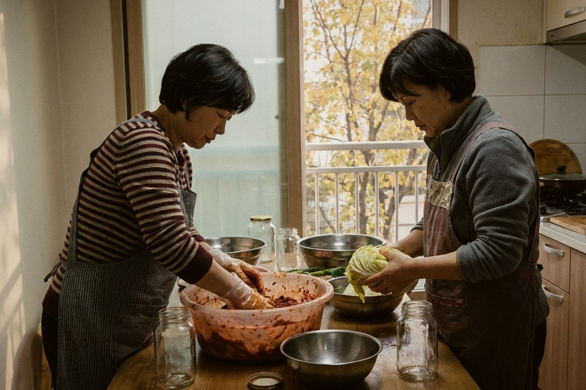
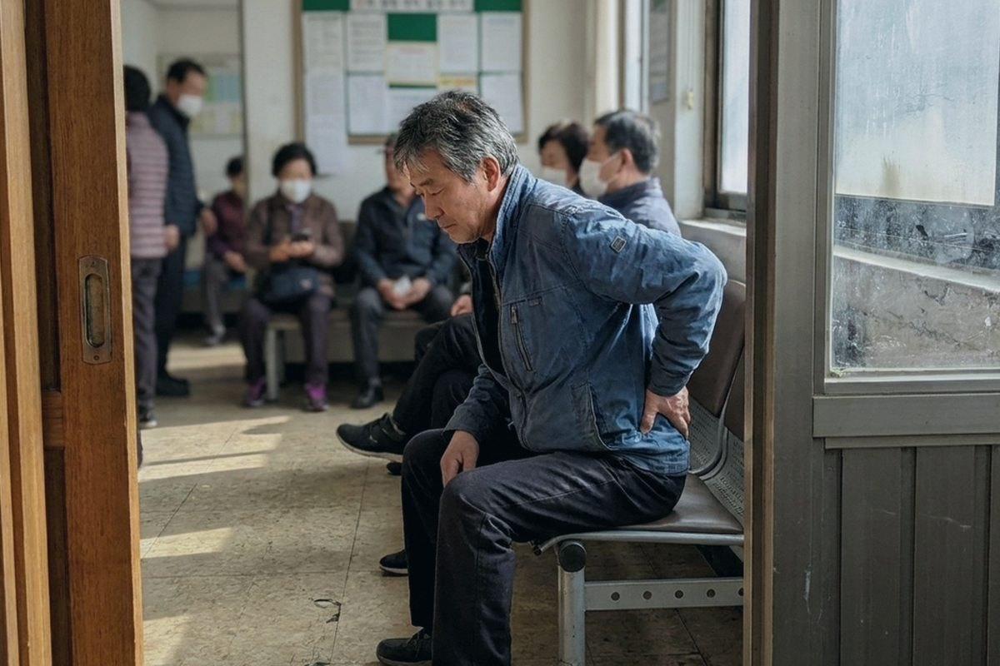

김장 다음 날 허리가 안 펴지고 숙일 때마다 뻐근하다면 대부분은 며칠 사이에 나아지는 급성 요통이에요. 2~3일만 쉬고 아프지 않은 만큼 움직이세요. 다리 저림, 힘 빠짐, 소변 이상이 있으면 기다리지 말고 진료를 받으세요.

김장 후 허리 통증은 대부분 허리 근육과 인대에 무리가 간 급성 요통이에요. 바닥에 쪼그려 앉아 배추를 버무리고 허리를 숙인 채 김치통을 몇 번씩 들면 생기기 쉬워요.
질병관리청 국가건강정보포털은 6주 안에 좋아지는 요통을 급성 요통이라 부르고, 가장 흔한 형태라고 설명해요. 요통 환자의 60%는 7일 안에, 대개는 4주 안에 좋아지고 90%는 보존적 치료(수술 없이 쉬고 약 먹는 치료)로 나아져요.
디스크부터 걱정하는 분이 많지만 요통 환자 약 85%는 검사해도 원인 질환이 나오지 않는 단순 요통이에요. 다만 평균일 뿐이니, 아래 위험 신호가 있다면 병원부터 가세요.
아주 아픈 처음 2~3일은 쉬고 그 뒤로는 아프지 않은 만큼 움직이는 편이 회복에 나아요. 대한정형외과학회는 급성 요통의 안정 기간으로 대개 2~3일을 권하고, 다리로 뻗치는 통증(방사통)이 있더라도 7일을 넘기지 말라고 안내해요. 너무 오래 누워 있으면 기능 회복과 재발 방지에 도움이 되지 않는대요.
찜질은 원인을 고치지는 못하지만 통증을 덜어 주는 데 도움이 돼요(KIMS 의약정보센터). 온찜질과 냉찜질 중 무엇이 낫다는 공식 기준은 확인하지 못했어요. 편한 쪽을 고르되 너무 뜨겁거나 차갑게 오래 대지 마세요.
허리보호대는 아픈 동안 잠깐 기대는 보조 도구예요. 대한정형외과학회는 「요통이 완전히 해소될 때까지 보조기를 계속 착용해야 한다」를 잘못 알려진 상식으로 꼽아요.
코크란 체계적 문헌고찰에서도 허리 보조장비를 쓴 사람과 안 쓴 사람 사이에 요통 예방이나 병가 단축 효과 차이가 없었어요. 연구 질이 낮아 신중하게 봐야 한다는 단서는 붙어 있어요. 강동경희대병원 재활의학과 김동환 교수도 보호대에 기대기보다 김장 양을 줄이고 가족과 일을 나누는 게 중요하다고 했어요.
허리를 아끼려면 바닥을 벗어나고 재료와 김치통을 몸 가까이 두세요. 양반다리로 바닥에 앉으면 버무리는 동안 허리와 등이 굽기 쉬워요.

이 자세들은 부담을 줄일 뿐 이미 생긴 통증을 치료하진 못해요. 들 때마다 통증이 심해진다면 옮기는 일은 다른 사람에게 맡기세요.
아래 항목 중 하나라도 있으면 진료를 받으세요. 국가건강정보포털이 심각한 질병이거나 즉시 치료가 필요한 요통일 수 있다고 꼽은 신호예요.
지켜보는 동안 다리 힘과 감각이 줄거나 배뇨·배변 기능이 떨어지거나 통증이 점점 커져도 즉시 치료가 필요해요. 정형외과, 신경외과, 재활의학과, 마취통증의학과에서 진료해요.

| 상황 | 할 일 | 근거 |
|---|---|---|
| 허리만 뻐근, 걷기 가능 | 2~3일 쉬고 아프지 않은 만큼 움직이기 | 대한정형외과학회 |
| 다리로 뻗치는 통증 | 안정은 길어도 7일 이내, 저림·힘 빠짐 있으면 진료 | 대한정형외과학회, 국가건강정보포털 |
| 허리보호대 | 잠깐만, 계속 차지 않기 | 대한정형외과학회 |
| 소변 이상·발열·체중 감소 | 바로 진료 | 국가건강정보포털 |
Q. 엉덩이에서 다리 뒤쪽으로 찌릿하게 뻗쳐요.
A. 국가건강정보포털은 이런 통증을 좌골신경통으로 설명하고, 가장 흔한 원인은 허리디스크라고 해요. 절반 정도는 10일 안에 좋아지지만 다리 힘이 빠지거나 감각이 둔해지면 바로 진료를 받으세요.
Q. 허리 근육 운동은 언제부터 하나요?
A. 대한정형외과학회는 초기 통증이 가라앉은 뒤에 스트레칭과 허리·복부 근력 운동이 도움이 될 수 있다고 안내해요.
이 글은 생활 관리 정보이고 진단을 대신하지 않아요. 위험 신호 6가지를 한 번 짚어 보고, 해당 항목이 있으면 진료부터 예약하세요. 김장 김치에 생굴을 넣을 계획이라면 노로바이러스 증상·예방법: 손소독제 말고 비누, 굴은 85℃에서 1분도 함께 확인해 보세요.